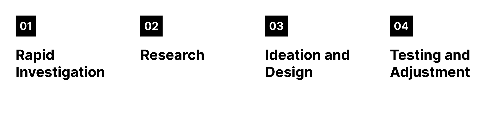
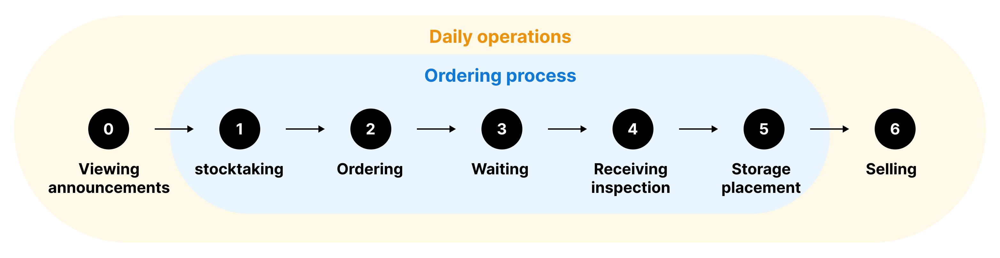
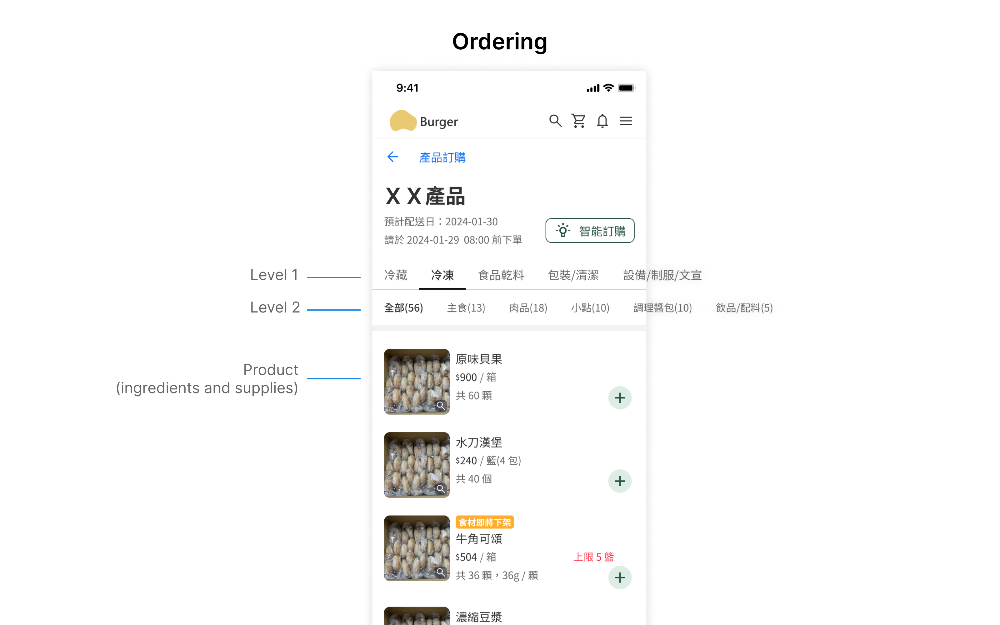
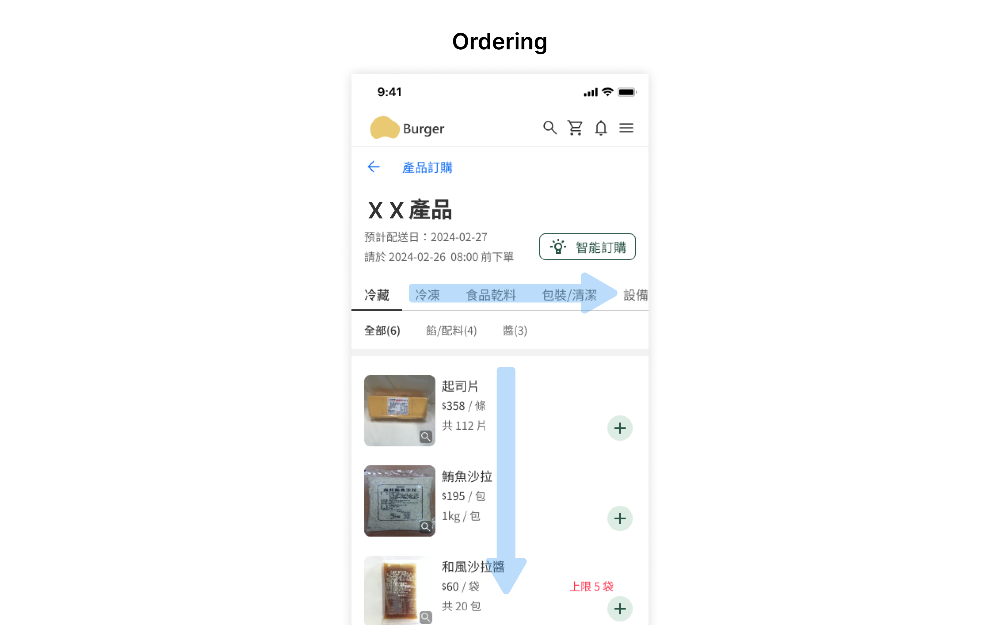

Breakfast shop ordering system
Nov 2023 - Mar 2024
Overview
Brief:
Ordering from franchisees is the main source of income for our client.
Our client hopes to improve the ordering system to reduce the issue of “unauthorized sourcing” in franchisees (where franchisees do not order from the headquarters but instead purchase materials directly from suppliers).
My role:
My partner Ken and I carried out this project from the early research phase through design and validation, with support from our supervisor, Raby.
Project Challenges:
This project involves numerous constraints that require effective communication with our client.
Additionally, there are many complex functionals and processes, demanding careful attention during the communication to ensure we can deliver comprehensive design.
Process
Rapid Investigation
To get a good grasp before starting the project, we talked to some friends and found two breakfast shop owners for one-on-one interviews to see how they run their businesses. One owns an independent breakfast shop, and the other runs a franchise of another brand.
Research
Through interviews with two company-owned shop owners and two franchisees, as well as internal stakeholders, we aimed to understand the operational situation of franchisees and headquarters, the problems they each face, and their requirements.
Shop Owners
From stocktaking to ordering, all store processes maintain a high level of consistency.
Shops usually start stocktaking close to closing time and place orders right after.
The demand for ingredients and supplies is determined based on experience. When new products are launched, it typically takes a few weeks to figure out the right amounts to order, but over time, the quantities stay fairly consistent.
By the way, most stores use their mobiles to place orders.
Stocktaking is done using stocktaking forms, and the sequence is based on how the ingredients and supplies are stored. For example, frozen ingredients are kept in one area and are counted together during stocktaking.
Last but not least, all shop owners confirmed that the issue of “unauthorized sourcing” is due to price concerns, without a doubt!
Internal Stakeholders
Order modifications and additions
Whenever a shop calls to add to their order, it messes up internal admin work and may cause problems for warehouse and logistics staff.
This poses a significant problem for the headquarters.
Promotional items
Whenever there is a promotion, shops need to order promotional items. However, the process of recording each shop’s promotional item orders and distributing the items requires a significant amount of manpower and time.
So, internal staff would greatly appreciate a reduction in labor costs for this part of the process.
Senior Executives
For senior executives, this project serves as a starting point for internal reform. However, since most of the content is confidential, I will focus mainly on information related to this project.
Internally, everyone knows that the main reason for “unauthorized sourcing” is the price. The headquarters maintains certain standards for the cost and quality of ingredients, making price adjustments difficult. They aim to make the ordering system more convenient for shop owners to encourage its use. At the same time, they hope the ordering system will address internal manpower issues, reducing costs to increase revenue.
Sum up
We found that shop owners don’t have significant issues with the current ordering system and are quite accustomed to using it over the long term. The real challenge lies with internal execution personnel, who face substantial manpower demands, especially with tasks like adding orders or managing promotional items. Therefore, in this project, we aim to indirectly reduce the internal manpower requirements during execution.
Goals
Reduce order additions
We aim to make it easier for shop owners to add orders through the system, rather than calling headquarters directly.
Easy ordering
Optimize the current ordering system to enhance overall user interface usability.
Design Deliverables
Homepage for quick information retrieval
Through a dashboard-like homepage design, different pieces of information are segmented into blocks to help users quickly distinguish information sections, making it easier to understand various content.
Additionally, noticeable color designs have been applied to product ordering section, allowing users to quickly find the functions they need upon entering this platform.
Categorization help current and new users
The current product categorization is based on storage methods. Although it is very familiar to current shop owners, future new franchisees will need to spend more time memorizing it.
At the outset, we aim to categorize products based on their types of ingredients and supplies, arranging them in order by storage method. This allows items with similar storage requirements to be grouped together. In the future, stocktaking forms will be prepared based on the sequence of product categorization. Shops will then conduct stocktaking in accordance with the order specified in the stocktaking forms. Therefore its important to ensure that items with similar storage requirements are grouped together and make stocktaking easier.
However, after discussing with internal staff, they strongly opposed categorizing products solely based on storage methods because they were concerned that current ㄘshop owners may find it difficult to adapt, potentially causing dissatisfaction. Therefore, we retained the current categorization method but introduced two levels on the interface so users can quickly understand which items are included.

A user-friendly ordering interface for shop owners
Shop owners are accustomed to ordering items one by one according to the stocktaking forms.
Therefore, in each category’s second level, we have preset ‘All’ so that users can order all items in sequence.
Switching categories only requires one click on the category above (originally a dropdown menu).
Additionally, if users need to find a specific item, our second-level categorization effectively narrows down the scope, allowing users to quickly locate the items.”

Order modifications and additions
To remind users about the option for adding or modifying orders, we have prominently highlighted the ‘Add / Modify’ button on the order page, making it easy for users to find this function.
Similarly, on the product ordering page, we have added prompts whenever a user has an existing order, asking if they would like to make any additions or modifications.
By adding prompts across different pathways, we ensure users know how to add and modify orders.
Quick Order Functions
Order Again :
For many shops, orders are often quite similar each time.
Therefore, we have included an ‘Order Again’ button in the order page, allowing users to add the same order content directly to their cart and make minor adjustments as needed.
Smart Ordering :
To handle sudden large orders, we enable users to calculate the required ingredients and supplies based on the number of meals, saving them the time of doing the calculations themselves.
Testing and Adjustments
Testing
In this project, we used the remote testing tool “Maze”. Since the primary focus of the test was to understand if users encountered any issues with the interface before development, we used both qualitative and quantitative methods. This approach allowed us to quickly have participants perform tasks and collect both feedback and data.
All participants in this test were breakfast shop owners of our client’s brand. We designed several tasks for the participants to perform, and used Maze to record their paths. After completing the tasks, we quickly asked them some questions to understand their thoughts during the tasks.
The test results showed that almost all participants were able to complete tasks such as ordering, viewing orders, and making modifications, which are the main functions of this ordering system. However, some participants had difficulty finding certain information, which led us to make adjustments to the naming conventions afterward.
Adjustments
Homepage should not only highlight the ordering function but also make the order entry easily accessible.
In the homepage design, we aimed for users to access several key functions directly from the homepage rather than through the menu.
However, after testing, we found that nearly half of the users looked for orders through the menu when given the task of finding an order.
We discovered that most participants, unfamiliar with the new interface, tended to overlook or forget parts of the homepage.
As a result, we made some adjustments to make the order entry on the homepage more noticeable.
Paths for order modifications differ, but users were able to complete the task.
When given the task of making order modifications, some participants accessed the orders directly, while others went to the product ordering page.
However, because we included prompts on the product ordering page to remind users about existing orders and whether they need to make modifications, users with different approaches were all able to successfully complete the task.

Reflection
Usually, the problems come from the user side, but this time, the biggest issues are internal. So, we need to enhance the user experience while focusing more on aligning with internal mechanisms and solving internal problems. This reminds me that as an UX designer, we strive to create delight experiences for users, but we also have to consider internal needs. Balancing both sides will help us enhance the overall product.